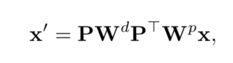
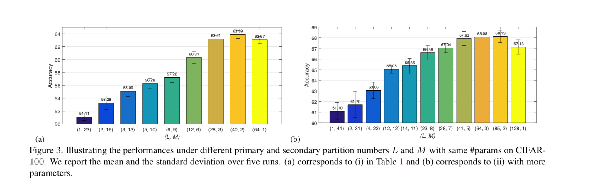

Interleaved Group Convolutions for Deep Neural Networks
URL: https://arxiv.org/abs/1707.02725
下图是IGCv1的整体示意图：
具体做法，首先整个IGC block会被分成两个部分，primary group convolutions 和 secondary group convolutions：
primary group convolutions的输入首先会被分成L个partition，每个partition共M个channel， 每个partition内部进行一般的spatial conv操作，最后的输出还会是ML个channel，那么在secondary group convolutions阶段，上一阶段的输出会先被shuffle一下然后再划分为M个partition，每个partition L个channel，对于第i个partition它其中的M个channel分别来自于前一个阶段的每个partition的第i个channel组成，然后每个partition内部进行1x1的卷积操作，最后还是会输出ML个channel，这ML个打乱的channel会再次映射回输入时候的顺序, 整个过程被抽象成如下的卷积操作，P为序列化：

除了IGC主要的逻辑以外论文中也花了比较多的篇幅在论文，IGC比常规的conv操作在同等参数量的情况下宽度更宽，论证比较简单具体可以参考论文，同时作者也通过实验证明了更宽的网络可以得到更好的结果：

最后的一组实验结果
本博客所有文章除特别声明外，均采用 CC BY-NC-SA 4.0 许可协议。转载请注明来自 Out of Memory！